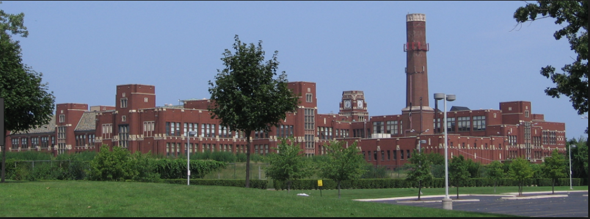

Graduation
One of my greatest achievments is probably graduating my old school, Ole A Thorp, I honestly didnt think I would make it that far through all the stress and work, in other words, I didnt dropout :)
Lane Tech
Another one of my greatest achievments is getting into Lane Techinical High School, when I found out that I got in, that day probably became my third best day in my life

These achievements have made me the person I am today,and in some way, changed my personality to a better one